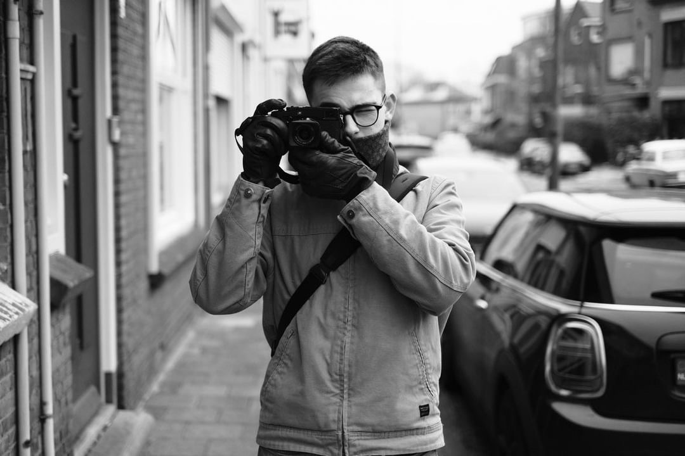
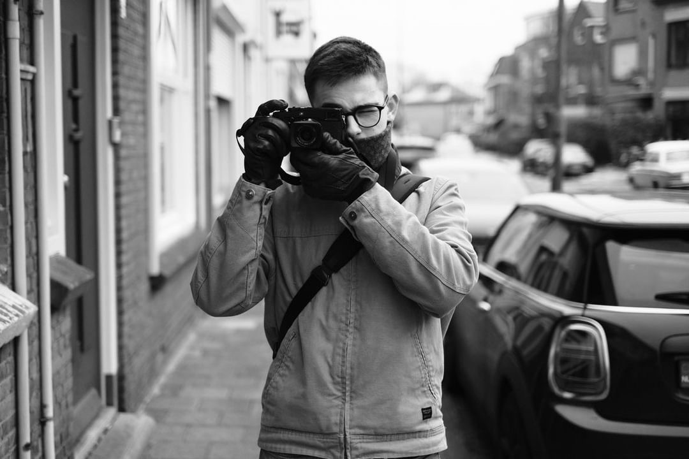

About Me
My Story
Born and raised in Slovakia, I’ve always been drawn to creative expression and technology. My journey began with a love for photography, leading me to explore the streets and capture stories through my lens. Over time, this passion evolved into filmmaking, combining visual storytelling with dynamic narratives.
Moving to the Netherlands to pursue my studies in Creative Business has been a transformative experience. It’s allowed me to refine my skills in filmmaking and marketing while broadening my perspectives as a traveler and storyteller. Whether behind the camera or in front of a computer editing, I strive to create meaningful content that connects with people and inspires them.
Beyond work, I find joy in exploring new places, meeting interesting individuals, and capturing moments that tell untold stories. My ultimate goal is to blend creativity with professionalism, working with iconic brands like Porsche to create visuals that resonate deeply with audiences.
Previous Jobs:
- IT Support Specialist: Assisted clients with hardware and software issues, troubleshooting networks, and ensuring seamless system operations.
- Freelance Photographer: Captured stunning travel, street, and car photography, specializing in Porsches and dynamic shots.
- Content Creator: Produced short films, photo zines, and creative projects for personal and client work.
Studies:
- Bachelor's in Creative Business at BUAS (Netherlands): Specializing in filmmaking, marketing, and management.
- Cisco Networking Certification: Developed skills in networking and IT infrastructure.